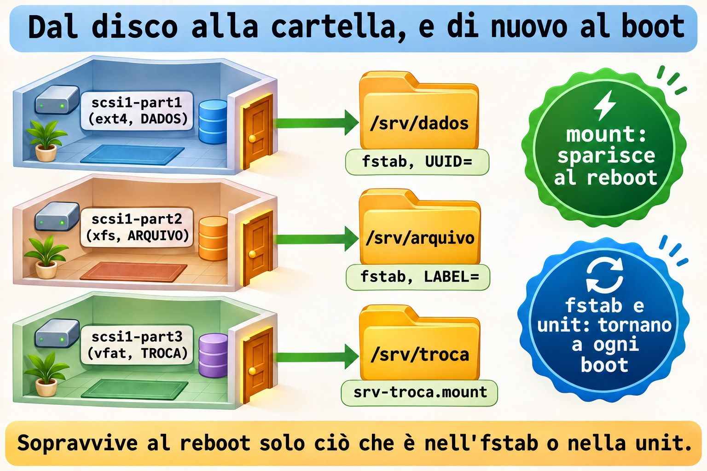
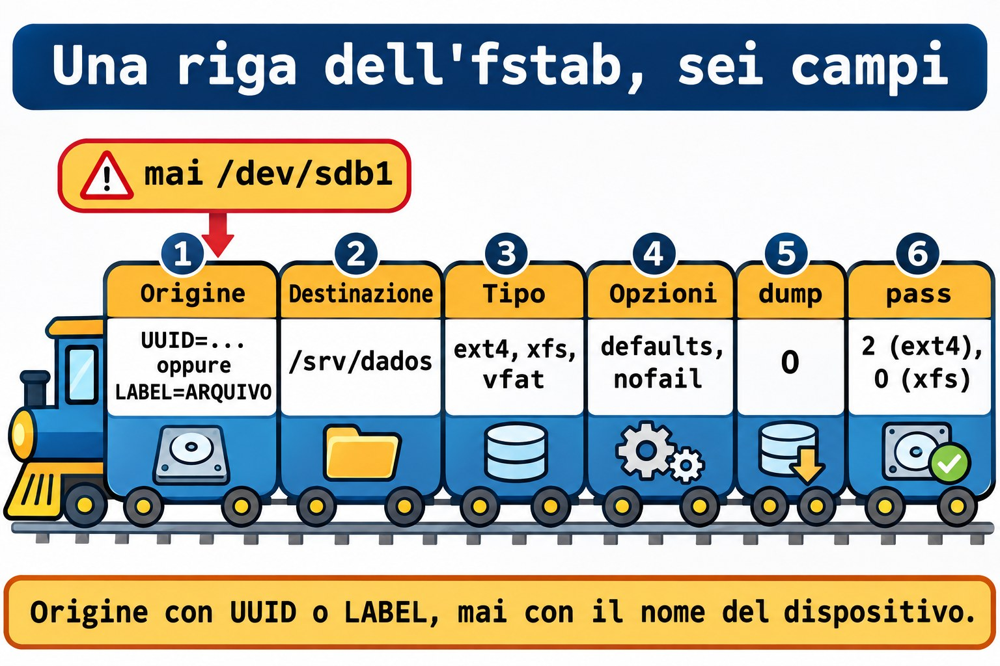
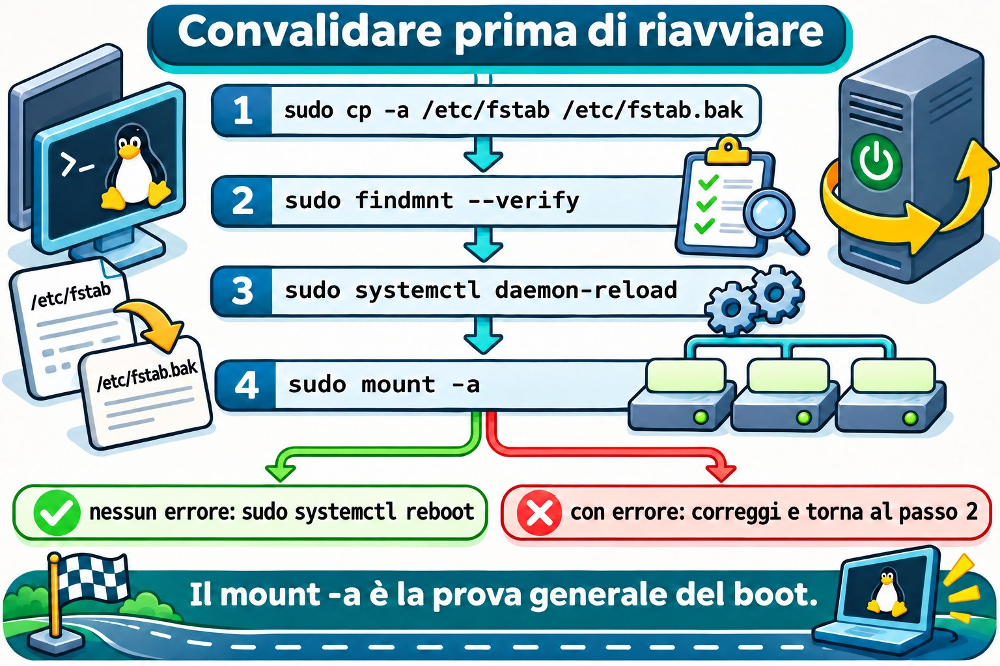

Lezione 9.4 · Montare e rendere persistente
In Windows, il disco nuovo riceve una lettera e resta lì anche dopo il riavvio. In Linux, un file system compare solo quando qualcuno lo monta in una cartella, e, senza registrazione, il montaggio sparisce al reboot. In questa lezione monti le tre partizioni della 9.3 in /srv/dados, /srv/arquivo e /srv/troca, lasci tutto registrato in modo sicuro e lo dimostri con un reboot.
Il cuore di questa lezione: montare e smontare con
mounteumount; leggere lo stato confindmnt; scrivere una riga di/etc/fstabcon i sei campi; scegliereUUID=oLABEL=al posto di/dev/sdb1; usarenofail; validare confindmnt --verifyemount -aprima di riavviare; e montare un VFAT con una unit di systemd. Il resto è approfondimento.
| Scheda | |
|---|---|
| Modulo | M9 · Storage, lezione 4 di 7 |
| Quando | Settimana 14 |
| Alla fine | Tre montaggi che sopravvivono al reboot, e un fstab che validi prima di fidarti |
| Prerequisiti | Lezioni 9.1, 9.2 e 9.3 (le tre partizioni di scsi1 con file system ed etichette) |
| Durata | circa 2h30 |
| Snapshot | m9a4-inicio e m9a4-fim su rocky-lab e debian-lab |
1 · Riscaldamento
Rispondi prima di leggere.
- Un file system esiste sul disco, ma
lssulla cartella la mostra vuota. Cosa può essere successo? - Perché il nome
/dev/sdb1è una cattiva scelta per una registrazione permanente? - Il server ha un disco dati che a volte non è presente. Cosa succede al boot se l'fstab richiede quel disco?
2 · Perché conta
| La richiesta | La risposta sbagliata | Cosa provoca |
|---|---|---|
| "Abbiamo riavviato e i dati sono spariti" | Copiare di nuovo tutto | Il montaggio non era nell'fstab, e i dati nuovi sono finiti sul disco della root |
| "Il server non parte dopo il reboot" | Reinstallare | Una riga sbagliata nell'fstab, senza nofail, manda il boot in modalità di emergenza |
"Il disco è diventato /dev/sdc e il backup è fallito" | Cambiare il nome nello script | La registrazione usava il nome del dispositivo, e l'ordine non è garantito |
| "Ho scritto nella cartella e il disco è ancora vuoto" | Cercare l'errore nel programma | Hai scritto sulla root, sotto un montaggio che era caduto |
3 · Modello mentale
Un disco formattato è una stanza senza porta. Montare significa installare la porta in una parete: la cartella vuota è il vano, e ciò che si apre dietro è il file system.
/etc/fstabè l'elenco delle porte che la casa rimonta ogni volta che torna la corrente. Scrivi l'indirizzo della stanza per ciò che è (UUID o etichetta), e non per l'ordine in cui le stanze sono state costruite (sdb1). E, se una porta si deforma, la casa si accende lo stesso, purché l'elenco dicanofail.
/ (raiz, no disco do sistema)
└── srv
├── dados ← scsi1-part1 ext4 DADOS fstab, UUID=
├── arquivo ← scsi1-part2 xfs ARQUIVO fstab, LABEL=
└── troca ← scsi1-part3 vfat TROCA unit srv-troca.mount
mount : liga agora (some no reboot)
fstab : liga em todo boot (lido pelo systemd na partida)
unit : liga em todo boot (mesma ideia, escrita como serviço)

Ponte Windows
| In Windows | In Linux | Dove il paragone inganna |
|---|---|---|
Lettera di unità (D:) | Punto di montaggio (/srv/dados) | Non ci sono lettere: tutto vive in un unico albero |
Assegnare la lettera (Gestione disco, diskpart) | mount | Il semplice mount non è persistente |
Lettera salvata nel registro (MountedDevices) | /etc/fstab | È un file di testo, che modifichi e validi |
Percorso del volume \\?\Volume{GUID}\ | UUID= | Stessa idea: identificare per ciò che il volume è |
chkdsk all'avvio | Campo 6 dell'fstab (pass) | Lo usa solo ext4; XFS non ne ha bisogno |
4 · L'essenziale
Montare e smontare a mano
sudo mount /dev/disk/by-label/DADOS /srv/dados
findmnt /srv/dados
sudo umount /srv/dadosmount ORIGEM DESTINO: collega il file system dell'origine alla cartella di destinazione. Il tipo (ext4,xfs,vfat) viene rilevato da solo.findmnt CAMINHO: mostra come quel percorso è montato. Senza argomento, elenca l'intero albero.-o TARGET,SOURCE,FSTYPE,OPTIONSsceglie le colonne.umount DESTINO: scollega. Dàtarget is busyse qualche processo usa la cartella (esci concd ~).
L'fstab, campo per campo
Una riga, sei campi separati da spazi:
UUID=3f0c... /srv/dados ext4 defaults,nofail,x-systemd.device-timeout=10s 0 2| Campo | Esempio | Significa |
|---|---|---|
| 1 · Origine | UUID=..., LABEL=ARQUIVO | Chi è il file system |
| 2 · Destinazione | /srv/dados | La cartella (deve esistere) |
| 3 · Tipo | ext4, xfs, vfat | Il file system |
| 4 · Opzioni | defaults,nofail | Come montare |
5 · dump | 0 | Residuo di un vecchio programma di backup. Usa 0 |
6 · pass | 0, 1 o 2 | Ordine di fsck al boot: 1 solo per la root, 2 per gli altri ext4, 0 per non controllare (XFS e VFAT) |
Come origine, preferisci UUID= (identificatore scritto da mkfs, unico) o LABEL= (etichetta che hai scelto tu, leggibile). Evita /dev/sdb1: l'ordine dei nomi cambia.


Opzioni che contano
| Opzione | Effetto |
|---|---|
defaults | rw,suid,dev,exec,auto,nouser,async: il comune, per l'uso normale |
nofail | Se il dispositivo non esiste o non si monta, il boot continua |
x-systemd.device-timeout=10s | Aspetta 10 s il dispositivo, e non 90 s |
noexec, nosuid, nodev | Hardening (non esegue binari, ignora SUID e dispositivi) |
nofail con x-systemd.device-timeout è la coppia di ogni disco dati. La root e /boot restano senza nofail, perché il sistema dipende da loro.
Unit di montaggio, per il VFAT
systemd trasforma ogni riga dell'fstab in una unit di montaggio. Puoi anche scrivere la unit a mano. Il nome è il percorso, con / che diventa -, e lo calcola systemd-escape:
systemd-escape -p --suffix=mount /srv/troca-ptratta l'argomento come un percorso;--suffix=mountaggiunge il tipo. L'output èsrv-troca.mount.
Il file /etc/systemd/system/srv-troca.mount ha tre blocchi: [Unit], [Mount] (What=, Where=, Type=, Options=) e [Install]. Where= deve coincidere con il nome del file, altrimenti systemd rifiuta.
In un fstab, nofail fa creare a systemd una dipendenza debole (Wants=), e non una obbligatoria (Requires=). Nella unit scritta a mano, a farlo è [Install] con WantedBy=local-fs.target: se il montaggio fallisce, il boot continua.
VFAT non conserva né proprietario né modo. Le opzioni uid=, gid= e umask= dicono chi sembra essere il proprietario e cosa può fare: con umask=022, tutto appare come rwxr-xr-x.
Verificare prima di riavviare
| Voglio... | Comando |
|---|---|
| Controllare la sintassi e le origini dell'fstab | sudo findmnt --verify |
| Mostrare ogni test | sudo findmnt --verify --verbose |
| Montare tutto ciò che manca nell'fstab | sudo mount -a |
| Avvisare systemd che l'fstab è cambiato | sudo systemctl daemon-reload |
Vedere tutto ciò che è montato in /srv | findmnt -o TARGET,SOURCE,FSTYPE,OPTIONS | grep srv |
Prima di modificare: sudo cp -a /etc/fstab /etc/fstab.bak (-a conserva proprietario, modo e data).


Rocky × Debian
| Rocky | Debian | |
|---|---|---|
| Root nell'fstab | /dev/mapper/rl-root | /dev/mapper/debian--lab--vg-root o UUID= |
| Aspetto del file | Poche righe, con l'intestazione dell'installer | Commenti che spiegano ogni riga |
| XFS | Nativo | Installa xfsprogs per gli strumenti (xfs_info, xfs_repair) |
| Modificando l'fstab | systemctl daemon-reload (mount dà un (hint) se te ne dimentichi) | Lo stesso |
| Pacchetti | rpm -q xfsprogs dosfstools | dpkg -s xfsprogs dosfstools |
5 · Lab guidato
Passo 0 · Snapshot, backup e controllo. Il backup di PBS che hai fatto nella 9.1 resta valido. Ricorda: lo snapshot non è un backup. In Proxmox:
qm snapshot 201 m9a4-inicio
qm snapshot 202 m9a4-inicio
pvesm list PBS-LAB --vmid 201L'ultimo comando deve elencare il backup della 9.1. Su rocky-lab, controlla il disco (lo scsi1 della 2.2, ampliato nella 9.1) dal nome stabile, e solo dopo guarda le partizioni:
ls -l /dev/disk/by-id/ | grep scsi1
lsblk -f
ls -l /dev/disk/by-label/Output atteso (la lettera potrebbe non essere sdb):
NAME FSTYPE FSVER LABEL UUID MOUNTPOINTS
sdb
├─sdb1 ext4 1.0 DADOS 3f0c1c1e-5a47-4d0e-9b53-0d6a1c2f7e11
├─sdb2 xfs ARQUIVO 8b7a52f4-12c9-4c7e-a1d0-6e7f3b9c0a42
└─sdb3 vfat FAT32 TROCA 4A21-9C3ESe manca qualche etichetta, torna alla 9.3. Controlla i pacchetti con rpm -q xfsprogs dosfstools e installa ciò che manca con sudo dnf install -y xfsprogs dosfstools. Crea le cartelle:
sudo mkdir -p /srv/dados /srv/arquivo /srv/trocaPasso 1 · Montare a mano, uno alla volta.
sudo mount /dev/disk/by-label/DADOS /srv/dados
findmnt -o TARGET,SOURCE,FSTYPE,OPTIONS /srv/dados
sudo umount /srv/dados
findmnt /srv/dadosLa prima interrogazione mostra /srv/dados /dev/sdb1 ext4 rw,relatime. Dopo umount, il secondo findmnt non stampa nulla: non è più un punto di montaggio. Ripeti con ARQUIVO in /srv/arquivo (compare xfs) e TROCA in /srv/troca (compare vfat). Smonta tutti e tre.
Passo 2 · /srv/dados nell'fstab, per UUID.
sudo cp -a /etc/fstab /etc/fstab.bak
DADOS_UUID=$(sudo blkid -s UUID -o value /dev/disk/by-label/DADOS)
echo "$DADOS_UUID"
echo "UUID=$DADOS_UUID /srv/dados ext4 defaults,nofail,x-systemd.device-timeout=10s 0 2" | sudo tee -a /etc/fstab
tail -n 3 /etc/fstabblkid -s UUID -o value DISPOSITIVOstampa solo l'UUID, senza il resto della riga.tee -aaggiunge in fondo al file consudo. Un semplice>>fallirebbe, perché la redirezione gira come te, e non come root.
Passo 3 · /srv/arquivo nell'fstab, per LABEL.
echo "LABEL=ARQUIVO /srv/arquivo xfs defaults,nofail,x-systemd.device-timeout=10s 0 0" | sudo tee -a /etc/fstabIl campo 6 è 0: XFS non usa fsck al boot (fsck.xfs non fa nulla, e la riparazione è manuale, argomento della 9.5).
Passo 4 · /srv/troca con una unit di systemd. Scopri il tuo UID e GID, e il nome della unit:
id -u; id -g
systemd-escape -p --suffix=mount /srv/trocaCrea il file (sostituisci 1000 con ciò che ha mostrato id):
sudo tee /etc/systemd/system/srv-troca.mount > /dev/null <<'EOF'
[Unit]
Description=Troca (VFAT, rotulo TROCA)
[Mount]
What=/dev/disk/by-label/TROCA
Where=/srv/troca
Type=vfat
Options=uid=1000,gid=1000,umask=022,nofail
[Install]
WantedBy=local-fs.target
EOFWhat=punta all'etichetta, e non asdb3.Options=è l'elenco del campo 4.nofailqui è lo stesso testo dell'fstab, e la vera protezione viene daWantedBy=di[Install], come ha spiegato la lezione.
Passo 5 · Validare prima di riavviare.
sudo findmnt --verify
sudo systemctl daemon-reload
sudo mount -a
sudo systemctl enable --now srv-troca.mount
findmnt -o TARGET,SOURCE,FSTYPE,OPTIONS | grep srv- In
findmnt --verify, le righe di/srvnon devono avere avvisi. Su Rocky, di solito avvisarecommended root FS passno is 1 (current is 0)sulla root: la riga è dell'installer, e XFS non usafsckal boot. Lasciala com'è. Senza alcun avviso, il riepilogo èSuccess, no errors or warnings detected. daemon-reloadfa rileggere a systemd l'fstab e la nuova unit.mount -amonta/srv/dadose/srv/arquivo.enable --nowattiva la unit adesso e nei prossimi boot.
Output atteso dell'ultimo comando: le tre righe, con ext4, xfs e vfat (quest'ultimo con uid=1000,gid=1000 e fmask=0022).
Ora assegna a te stesso la proprietà delle prime due e prova la terza:
sudo chown "$USER": /srv/dados /srv/arquivo
echo ola > /srv/dados/ola.txt
echo ola > /srv/arquivo/ola.txt
touch /srv/troca/ola.txt
chmod 600 /srv/troca/ola.txt
ls -ld /srv/trocachmod su VFAT fallisce con Operation not permitted. ls -ld /srv/troca mostra te come proprietario, grazie a uid=.
Passo 6 · Riavviare e dimostrare.
sudo systemctl rebootRientra e lancia:
findmnt -o TARGET,SOURCE,FSTYPE | grep srv
cat /srv/dados/ola.txt /srv/arquivo/ola.txt
systemctl --failedI tre montaggi tornano, con i file, e nessuna srv-*.mount compare in --failed.
Passo 7 · debian-lab. Ripeti i passi da 0 a 6 su debian-lab (xfsprogs con sudo apt install -y xfsprogs). Aggiungi soltanto le tue righe in fondo al suo /etc/fstab, che ha già commenti e UUID=.
Decidi 1
Il server ha un disco dati che, a volte, viene spento per manutenzione. Eppure deve partire da solo. Qual è la riga giusta?
A) /dev/sdb1 /srv/dados ext4 defaults 0 2. B) UUID=... /srv/dados ext4 defaults,nofail,x-systemd.device-timeout=10s 0 2. C) Togliere la riga dall'fstab e montare a mano dopo ogni boot.
Scegli un'opzione prima di continuare.
| Se hai scelto | Risultato | Perché |
|---|---|---|
| A | Sbagliato | Il nome del dispositivo cambia, e senza nofail l'assenza del disco blocca il boot |
| B | Giusto | Identifica per UUID, non blocca il boot e aspetta poco |
| C | Non scala | Qualcuno se ne dimentica, e il servizio scrive sulla root |
Da ricordare: un disco dati vuole UUID= o LABEL= e nofail.
Decidi 2
Hai modificato l'fstab. Prima di riavviare, cosa fai?
A) Riavvii e vedi. B) sudo findmnt --verify, sudo systemctl daemon-reload e sudo mount -a. C) Ti fidi, perché hai copiato la riga da un altro server.
Scegli un'opzione prima di continuare.
| Se hai scelto | Risultato | Perché |
|---|---|---|
| A | Rischioso | Un errore diventa una corsa alla console |
| B | Giusto | Trovi l'errore a sistema in piedi, dove la riparazione è un cp |
| C | Rischioso | L'UUID dell'altro server non esiste su questo |
Da ricordare: mount -a è la prova generale del boot.
6 · Rompi e ripara
Guasto 1 · La scrittura che resta nascosta
Su rocky-lab, simula un montaggio caduto:
sudo umount /srv/arquivo
echo oi | sudo tee /srv/arquivo/escondido.txt
sudo mount /srv/arquivo
ls /srv/arquivoSintomo: escondido.txt è sparito, e il disco XFS non l'ha mai ricevuto.
Diagnosi: mountpoint /srv/arquivo dice che adesso è un punto di montaggio. Il file è stato scritto sulla root, nella cartella vuota, e il montaggio l'ha coperto. Per vedere cosa c'è sotto, monta la root in un altro posto:
sudo mkdir -p /mnt/raiz
sudo mount --bind / /mnt/raiz
ls /mnt/raiz/srv/arquivoRiparazione: cancella dal percorso di sotto: sudo rm /mnt/raiz/srv/arquivo/escondido.txt. Poi sudo umount /mnt/raiz.
Guasto 2 · UUID digitato male
sudo cp -a /etc/fstab /etc/fstab.ok
echo "UUID=11111111-2222-3333-4444-555555555555 /srv/teste ext4 defaults,nofail 0 2" | sudo tee -a /etc/fstab
sudo mkdir -p /srv/teste
sudo mount -aSintomo: nessuno, ed è questo il pericolo. mount -a termina in silenzio, perché nofail dice anche a mount di non lamentarsi per un dispositivo che non esiste. E findmnt /srv/teste non mostra nulla.
Diagnosi: sudo findmnt --verify segnala la riga /srv/teste con un avviso di origine non trovata (l'UUID=11111111-...), e il riepilogo finale conta quell'avviso. Confronta con lsblk -f: quell'UUID non esiste.
Riparazione: sudo cp -a /etc/fstab.ok /etc/fstab e sudo systemctl daemon-reload. Senza nofail, quella riga sarebbe un boot in modalità di emergenza. Con l'opzione, è un disco che non si monta mai e nessuno se ne accorge. Per questo si valida con entrambi: findmnt --verify e mount -a.
Guasto 3 · La unit che non corrisponde al nome
sudo systemctl stop srv-troca.mount
sudo sed -i 's|^Where=.*|Where=/srv/trocas|' /etc/systemd/system/srv-troca.mount
sudo systemctl daemon-reload
sudo systemctl start srv-troca.mountSintomo: Failed to start srv-troca.mount.
Diagnosi: systemctl status srv-troca.mount mostra Where= setting doesn't match unit name. Refusing. journalctl -u srv-troca.mount -b riporta la stessa riga.
Riparazione: sudo sed -i 's|^Where=.*|Where=/srv/troca|' /etc/systemd/system/srv-troca.mount, poi sudo systemctl daemon-reload e sudo systemctl start srv-troca.mount. Il nome della unit è il percorso.
Pulizia
sudo rmdir /mnt/raiz /srv/teste
sudo rm -f /etc/fstab.ok /srv/dados/ola.txt /srv/arquivo/ola.txt /srv/troca/ola.txt
findmnt -o TARGET,SOURCE,FSTYPE | grep srvConserva /etc/fstab.bak, le righe dell'fstab e la unit: i tre montaggi restano, come si aspetta la 9.5.
7 · Trappole
| Trappola | Cosa succede | Come evitarla |
|---|---|---|
/dev/sdb1 nell'fstab | Cambia nome e monta il disco sbagliato | UUID= o LABEL= |
Disco dati senza nofail | Boot in modalità di emergenza | nofail e x-systemd.device-timeout=10s |
Dimenticare daemon-reload | systemd usa il vecchio fstab | Lancialo dopo ogni modifica |
| Scrivere con il montaggio caduto | Dati sulla root, sotto | mountpoint -q /srv/dados negli script |
8 · Quiz
Rispondi senza guardare. Le soluzioni sono alla fine della lezione.
- Quali sono i sei campi di una riga dell'fstab?
- Qual è la differenza tra
UUID=eLABEL=? Quale dei due cambia se rifaimkfs? - Cosa fa
nofail, e cosa non fa? - A cosa serve
findmnt --verify, e perchémount -acompleta il test? - Come si chiama la unit che monta
/srv/troca? - Perché
chmodfallisce su un VFAT montato?
9 · Promemoria
Da sapere a memoria:
| Voglio... | Comando |
|---|---|
| Montare | sudo mount ORIGEM PASTA |
| Vedere un montaggio | findmnt PASTA |
| UUID di un dispositivo | sudo blkid -s UUID -o value DISP |
| Copia dell'fstab | sudo cp -a /etc/fstab /etc/fstab.bak |
| Validare | sudo findmnt --verify, sudo mount -a |
| Rileggere l'fstab | sudo systemctl daemon-reload |
Da consultare:
| Voglio... | Comando |
|---|---|
| Nome della unit | systemd-escape -p --suffix=mount /srv/troca |
| Attivare la unit | sudo systemctl enable --now srv-troca.mount |
| Vedere cosa c'è sotto | sudo mount --bind / /mnt/raiz |
| Unit con errore | systemctl --failed, journalctl -u UNIT -b |
Flashcard:
mountda solo → sparisce al reboot.UUID=→ non cambia con l'ordine dei dischi.nofail→ il boot continua.findmnt --verify→ prova della sintassi.
10 · Checklist e chiusura
- [ ] Monto e smonto a mano e leggo con
findmnt - [ ] Scrivo a memoria una riga di fstab con i sei campi
- [ ] Scelgo
UUID=oLABEL=, mai/dev/sdb1 - [ ] Uso
nofailex-systemd.device-timeout=10ssui dischi dati - [ ] Valido con
findmnt --verifyemount -aprima di riavviare - [ ] Monto un VFAT con una unit, con
uid=,gid=eumask= - [ ] Dimostro i montaggi con un reboot
Ultimo esercizio, senza guardare la lezione: su debian-lab, ripristina /etc/fstab.bak, smonta tutto e rifai i tre montaggi. Dimostralo con un reboot.
Snapshot di fine (in Proxmox):
qm snapshot 201 m9a4-fim
qm snapshot 202 m9a4-fim11 · Nella vita reale
Missione, sola lettura. Su un server Linux che amministri (o con autorizzazione), lancia solo:
grep -vE '^\s*(#|$)' /etc/fstab
findmnt -o TARGET,SOURCE,FSTYPE,OPTIONS --real
sudo findmnt --verify
systemctl --failed --no-pager
systemctl list-units --type=mount --no-pagerDomande a cui rispondere:
- Qualche riga usa
/dev/sdXinvece diUUID=oLABEL=? - C'è un disco dati senza
nofail? findmnt --verifyha avvisi? Quali?
Diario: annota ciò che merita attenzione. Non modificare né montare nulla.
12 · Approfondire quando vuoi
man fstab,man mount,man findmnt: campi, opzioni e--verify.man systemd.mounteman systemd-fstab-generator: unit di montaggio e come l'fstab diventa una unit.- Red Hat docs e Debian wiki (fstab): montaggio persistente.
- kernel.org (VFAT) e util-linux:
uid,gid,umask;mount,findmnt,blkid.
DeepTutor (http://10.1.0.149:3782, KB "Curso Linux Sysadmin"):
!explica os seis campos do fstab!quiz Aula 9.4, 5 perguntas sobre fstab
Soluzioni commentate
Riscaldamento
- Il montaggio non è attivo: la cartella mostra ciò che esiste sulla root, senza il disco. Controlla con
findmntomountpoint. - L'ordine dei nomi
sdXnon è garantito e può cambiare da un boot all'altro. - Senza
nofail, il boot aspetta il disco e finisce in modalità di emergenza. Connofail, il boot continua.
Quiz
- Origine, destinazione, tipo, opzioni,
dumpepass. UUID=è l'identificatore scritto damkfs, unico.LABEL=è il nome che scegli tu. Un nuovomkfsgenera un nuovo UUID. L'etichetta cambia solo se la cambi tu o se ti dimentichi di rimetterla.- Fa proseguire il boot se il dispositivo manca o non si monta (dipendenza debole). Non monta il disco che manca e non avvisa da sola.
--verifycontrolla sintassi, origini e destinazioni, senza montare, e segnala persino un'origine chenofailnasconderebbe.mount -aprova davvero, trovando errori che la lettura non vede (per esempio un'opzione che il file system rifiuta).srv-troca.mount: senza la barra iniziale,/diventa-, più.mount.- Perché VFAT non conserva né proprietario né modo. Proprietario e permessi arrivano da
uid=,gid=eumask=al montaggio.